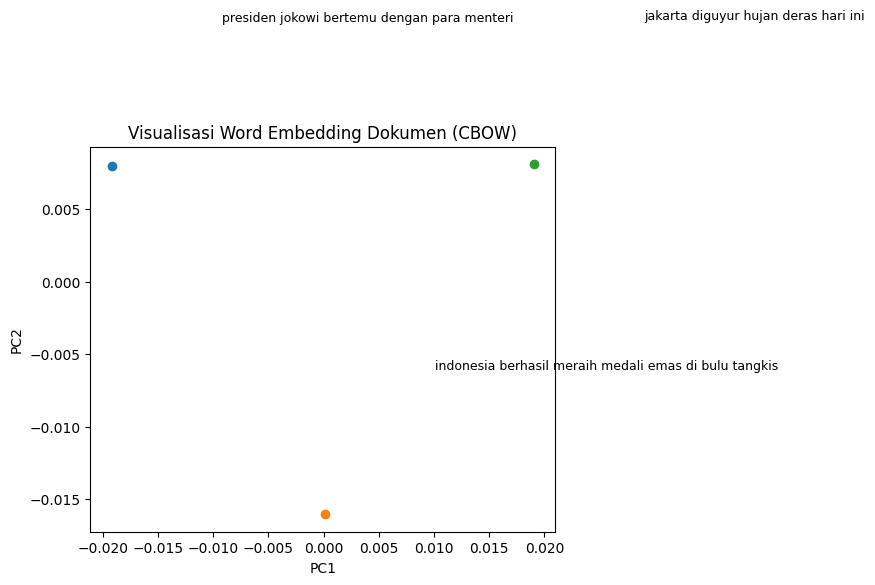

TF-IDF & WORD EMBEDDING, KLASIFIKASI SVM & NAIVE BAYES#
from google.colab import drive
drive.mount('/content/drive')
---------------------------------------------------------------------------
ModuleNotFoundError Traceback (most recent call last)
Cell In[1], line 1
----> 1 from google.colab import drive
2 drive.mount('/content/drive')
ModuleNotFoundError: No module named 'google'
import pandas as pd
df = pd.read_csv('/content/drive/MyDrive/semester 5/ppw/hasil-pre-pro_isi_beritaa.csv')
print(df.head())
isi kategori \
0 Content Not Found Politik
1 Jakarta - Menteri Sosial Saifullah Yusuf (Gus ... Politik
2 Jakarta - Menteri Dalam Negeri Muhammad Tito K... Politik
3 Polisi mengungkap alasan para tersangka pencul... Politik
4 Jakarta - Kementerian Ketenagakerjaan (Kemnake... Politik
isi(stopword) \
0 content not found
1 jakarta - menteri sosial saifullah yusuf (gus ...
2 jakarta - menteri negeri muhammad tito karnavi...
3 polisi mengungkap alasan tersangka penculikan ...
4 jakarta - kementerian ketenagakerjaan (kemnake...
isi_clean \
0 content not found
1 jakarta menteri sosial saifullah yusuf gus ipu...
2 jakarta menteri negeri muhammad tito karnavian...
3 polisi mengungkap alasan tersangka penculikan ...
4 jakarta kementerian ketenagakerjaan kemnaker m...
isi(cek ejaan) \
0 content not found
1 jakarta menteri sosial saifullah yusuf gus ipu...
2 jakarta menteri negeri muhammad tito karnavian...
3 polisi mengungkap alasan tersangka penculikan ...
4 jakarta kementerian ketenagakerjaan kemnaker m...
isi_stem \
0 content not found
1 jakarta menteri sosial saifullah yusuf gus ipu...
2 jakarta menteri negeri muhammad tito karnavian...
3 polisi ungkap alas sangka culi ujung kacab ban...
4 jakarta menteri ketenagakerjaan kemnaker catat...
isi_tokens
0 ['content', 'not', 'found']
1 ['jakarta', 'menteri', 'sosial', 'saifullah', ...
2 ['jakarta', 'menteri', 'negeri', 'muhammad', '...
3 ['polisi', 'ungkap', 'alas', 'sangka', 'culi',...
4 ['jakarta', 'menteri', 'ketenagakerjaan', 'kem...
TF-IDF#
import pandas as pd
from sklearn.feature_extraction.text import TfidfVectorizer
import ast
print("Sample of 'isi_tokens' column:")
print(df['isi_tokens'].head())
# Konversi string list ke Python list
def safe_literal_eval(x):
try:
return ast.literal_eval(x)
except (ValueError, SyntaxError):
return [] # kalo gagal, return list kosong
df['isi_tokens_list'] = df['isi_tokens'].apply(safe_literal_eval)
# Gabungkan token jadi string
df['tokens_joined'] = df['isi_tokens_list'].apply(lambda x: ' '.join(x))
# Inisialisasi TF-IDF Vectorizer
tfidf = TfidfVectorizer()
# Fit dan transform
tfidf_matrix = tfidf.fit_transform(df['tokens_joined'])
# Buat DataFrame hasil TF-IDF
tfidf_df = pd.DataFrame(
tfidf_matrix.toarray(),
columns=tfidf.get_feature_names_out(),
index=df.index
)
# ---- TAMPILKAN HASIL ----
print("Shape TF-IDF:", tfidf_matrix.shape) # (jumlah_dokumen, jumlah_kata_unik)
# Tampilkan 5 baris pertama (biar gak terlalu panjang)
print("\nTF-IDF sample (5 dokumen pertama):")
print(tfidf_df.head())
Sample of 'isi_tokens' column:
0 ['content', 'not', 'found']
1 ['jakarta', 'menteri', 'sosial', 'saifullah', ...
2 ['jakarta', 'menteri', 'negeri', 'muhammad', '...
3 ['polisi', 'ungkap', 'alas', 'sangka', 'culi',...
4 ['jakarta', 'menteri', 'ketenagakerjaan', 'kem...
Name: isi_tokens, dtype: object
Shape TF-IDF: (200, 6304)
TF-IDF sample (5 dokumen pertama):
0011 010 014 0147 0193 0258 0379 0381 04 0420 ... zarco \
0 0.0 0.0 0.0 0.0 0.0 0.0 0.0 0.0 0.0 0.0 ... 0.0
1 0.0 0.0 0.0 0.0 0.0 0.0 0.0 0.0 0.0 0.0 ... 0.0
2 0.0 0.0 0.0 0.0 0.0 0.0 0.0 0.0 0.0 0.0 ... 0.0
3 0.0 0.0 0.0 0.0 0.0 0.0 0.0 0.0 0.0 0.0 ... 0.0
4 0.0 0.0 0.0 0.0 0.0 0.0 0.0 0.0 0.0 0.0 ... 0.0
zaulia zefanya zendegi zhehuang zhou zinc zita zufra zulkifli
0 0.0 0.0 0.0 0.0 0.0 0.0 0.0 0.0 0.0
1 0.0 0.0 0.0 0.0 0.0 0.0 0.0 0.0 0.0
2 0.0 0.0 0.0 0.0 0.0 0.0 0.0 0.0 0.0
3 0.0 0.0 0.0 0.0 0.0 0.0 0.0 0.0 0.0
4 0.0 0.0 0.0 0.0 0.0 0.0 0.0 0.0 0.0
[5 rows x 6304 columns]
!pip install gensim
Requirement already satisfied: gensim in /usr/local/lib/python3.12/dist-packages (4.3.3)
Requirement already satisfied: numpy<2.0,>=1.18.5 in /usr/local/lib/python3.12/dist-packages (from gensim) (1.26.4)
Requirement already satisfied: scipy<1.14.0,>=1.7.0 in /usr/local/lib/python3.12/dist-packages (from gensim) (1.13.1)
Requirement already satisfied: smart-open>=1.8.1 in /usr/local/lib/python3.12/dist-packages (from gensim) (7.3.1)
Requirement already satisfied: wrapt in /usr/local/lib/python3.12/dist-packages (from smart-open>=1.8.1->gensim) (1.17.3)
Word Embedding#
import pandas as pd
from gensim.models import Word2Vec
import numpy as np
# ====== Contoh Dataframe kamu ======
# misal isi_tokens berisi list kata
df = pd.DataFrame({
"isi_tokens": [
["presiden", "jokowi", "bertemu", "dengan", "para", "menteri"],
["indonesia", "berhasil", "meraih", "medali", "emas", "di", "bulu", "tangkis"],
["jakarta", "diguyur", "hujan", "deras", "hari", "ini"]
],
"dokumen_asli": [
"presiden jokowi bertemu dengan para menteri",
"indonesia berhasil meraih medali emas di bulu tangkis",
"jakarta diguyur hujan deras hari ini"
]
})
# ====== Latih Word2Vec ======
model = Word2Vec(
sentences=df["isi_tokens"],
vector_size=100, # banyak dimensi
window=5,
min_count=1,
workers=4
)
# ====== Buat embedding per dokumen ======
def doc_vector(tokens, model):
vectors = []
for token in tokens:
if token in model.wv:
vectors.append(model.wv[token])
if len(vectors) == 0:
return np.zeros(model.vector_size) # kalau token ga ada
else:
return np.mean(vectors, axis=0) # rata-rata vektor kata
# Hitung embedding semua dokumen
doc_embeddings = df["isi_tokens"].apply(lambda x: doc_vector(x, model))
# Ubah ke dataframe (dim_0 ... dim_99)
embeddings_df = pd.DataFrame(doc_embeddings.tolist(), columns=[f"dim_{i}" for i in range(model.vector_size)])
# Tambahkan kolom dokumen asli
final_df = pd.concat([embeddings_df, df["dokumen_asli"]], axis=1)
print("Contoh Word Embedding (Dokumen jadi Vektor) ===")
print(final_df.head())
Contoh Word Embedding (Dokumen jadi Vektor) ===
dim_0 dim_1 dim_2 dim_3 dim_4 dim_5 dim_6 \
0 -0.001709 0.002798 -0.002383 -0.001359 -0.000433 0.002564 0.003340
1 0.000818 0.002231 0.002177 0.000142 0.000203 -0.002498 0.000100
2 -0.000585 -0.000734 0.002248 0.002910 0.002292 -0.004570 0.001681
dim_7 dim_8 dim_9 ... dim_91 dim_92 dim_93 dim_94 \
0 0.001860 -0.002417 -0.001283 ... 0.001770 -0.001113 -0.000930 0.003377
1 0.001731 -0.001080 -0.004299 ... 0.001316 0.000192 0.002393 0.002333
2 0.006360 -0.003605 -0.002025 ... 0.001037 0.003283 -0.000640 0.000921
dim_95 dim_96 dim_97 dim_98 dim_99 \
0 -0.001138 0.002677 -0.001539 0.002210 -0.000235
1 -0.001921 0.001321 0.001385 0.001576 0.001295
2 0.005349 -0.000753 -0.001191 -0.000312 0.002525
dokumen_asli
0 presiden jokowi bertemu dengan para menteri
1 indonesia berhasil meraih medali emas di bulu ...
2 jakarta diguyur hujan deras hari ini
[3 rows x 101 columns]
# Cek arsitektur model
if model.sg == 0:
print("Model menggunakan CBOW ✅")
else:
print("Belum menggunakan CBOW✅")
Model menggunakan CBOW ✅
Visualisasi#
from sklearn.decomposition import PCA
import matplotlib.pyplot as plt
# PCA ke 2 dimensi
pca = PCA(n_components=2)
doc_embeddings_2d = pca.fit_transform(doc_embeddings.tolist())
# Buat plot
plt.figure(figsize=(6,5))
for i, txt in enumerate(df["dokumen_asli"]):
x, y = doc_embeddings_2d[i]
plt.scatter(x, y)
plt.text(x+0.01, y+0.01, txt, fontsize=9)
plt.title("Visualisasi Word Embedding Dokumen (CBOW)")
plt.xlabel("PC1")
plt.ylabel("PC2")
plt.show()

df['label'] = df['kategori'] # "Politik" atau "Olahraga"
from sklearn.model_selection import train_test_split
X = doc_embeddings.tolist() # hasil embedding Word2Vec
y = df['label']
X_train, X_test, y_train, y_test = train_test_split(X, y, test_size=0.2, random_state=42)
Perbandingan TF-IDF dan Word Emedding mengunakan SVM dan Naive Bayes#
import pandas as pd
from gensim.models import Word2Vec
import numpy as np
from sklearn.model_selection import cross_val_score, StratifiedKFold
from sklearn.svm import SVC
from sklearn.naive_bayes import MultinomialNB
from sklearn.feature_extraction.text import TfidfVectorizer
from sklearn.metrics import classification_report, accuracy_score
# ===== Contoh DataFrame =====
# Modified to include multiple categories
df = pd.DataFrame({
"isi_tokens": [
['content', 'not', 'found'],
['jakarta', 'menteri', 'sosial', 'saifullah', 'yusuf', 'gus', 'ipu'],
['jakarta', 'menteri', 'negeri', 'muhammad', 'tito', 'karnavian'],
['polisi', 'ungkap', 'alas', 'sangka', 'culi'],
['jakarta', 'menteri', 'ketenagakerjaan', 'kemnaker', 'catat'],
['tim', 'nasional', 'indonesia', 'raih', 'emas', 'seagames'],
['pertandingan', 'sepakbola', 'liga', 'italia', 'seru'],
['harga', 'minyak', 'dunia', 'naik', 'drastis']
],
"kategori": ['politik', 'politik', 'politik', 'politik', 'politik', 'olahraga', 'olahraga', 'bisnis']
})
# ===== Word2Vec Embedding =====
w2v_model = Word2Vec(sentences=df['isi_tokens'], vector_size=50, window=3, min_count=1, workers=4)
def doc_vector(tokens, model):
vectors = [model.wv[t] for t in tokens if t in model.wv]
return np.mean(vectors, axis=0) if vectors else np.zeros(model.vector_size)
X_w2v = np.array([doc_vector(tokens, w2v_model) for tokens in df['isi_tokens']])
y = df['kategori']
# ===== Cross-validation SVM (Word2Vec) =====
svm_model = SVC()
cv = StratifiedKFold(n_splits=2, shuffle=True, random_state=42) # 2 fold karena dataset kecil
scores = cross_val_score(svm_model, X_w2v, y, cv=cv)
print("Average SVM accuracy (Word2Vec):", scores.mean())
# ===== TF-IDF =====
df['isi_string'] = df['isi_tokens'].apply(lambda x: ' '.join(x))
tfidf = TfidfVectorizer()
X_tfidf = tfidf.fit_transform(df['isi_string'])
# ===== Cross-validation Naive Bayes (TF-IDF) =====
nb_model = MultinomialNB()
scores_nb = cross_val_score(nb_model, X_tfidf, y, cv=cv)
print("Average Naive Bayes accuracy (TF-IDF):", scores_nb.mean())
Average SVM accuracy (Word2Vec): 0.625
Average Naive Bayes accuracy (TF-IDF): 0.625
/usr/local/lib/python3.12/dist-packages/sklearn/model_selection/_split.py:805: UserWarning: The least populated class in y has only 1 members, which is less than n_splits=2.
warnings.warn(
/usr/local/lib/python3.12/dist-packages/sklearn/model_selection/_split.py:805: UserWarning: The least populated class in y has only 1 members, which is less than n_splits=2.
warnings.warn(